Custom drapes, from fifty-three cloths.
Drapes are the cloths that close a room: 190 g/m² at the light end, 375 g/m² at the heavy end, woven 290–320 cm wide so most windows are cut from a single width with no seam across the face. Made up and delivered duty paid to the USA, they run $58.24–$103.58 per metre of cloth used.
Weight
Mid-weight, around 235 g/m², hangs straight without a bulky stack. Heavy cloth, 330 g/m² and up, hangs dead straight and wants a strong pole or track.
Light
Unlined, lined or blackout-lined — the cloth and the lining decide together how dark the room goes. If darkness is the point, start with blackout curtains.
Heading
Double pinch pleat is the everyday answer, triple pinch for a dressier window, ripple fold for a modern one, grommet for something casual.
Length
Floor-skimming, breaking or puddling — and how far above the window the pole sits. How long should curtains be.
17 of the fifty-three, in the same light.
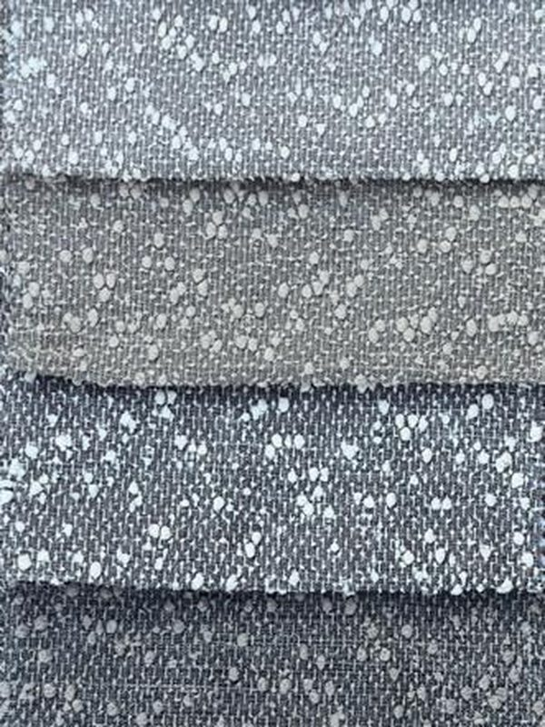
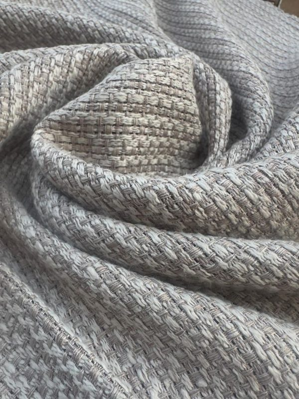
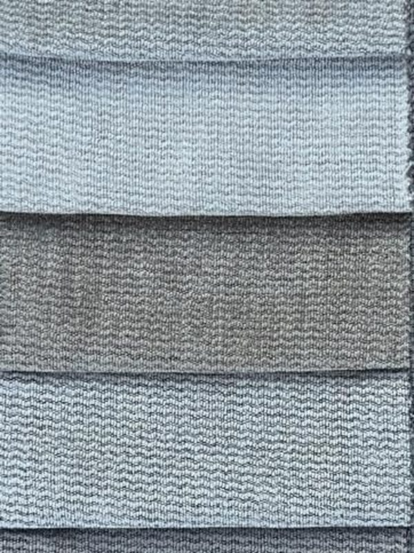

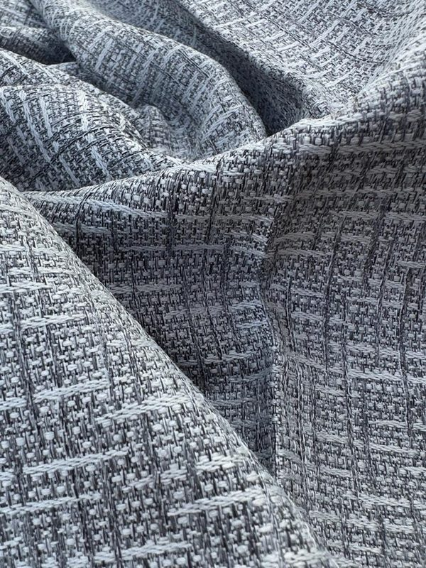
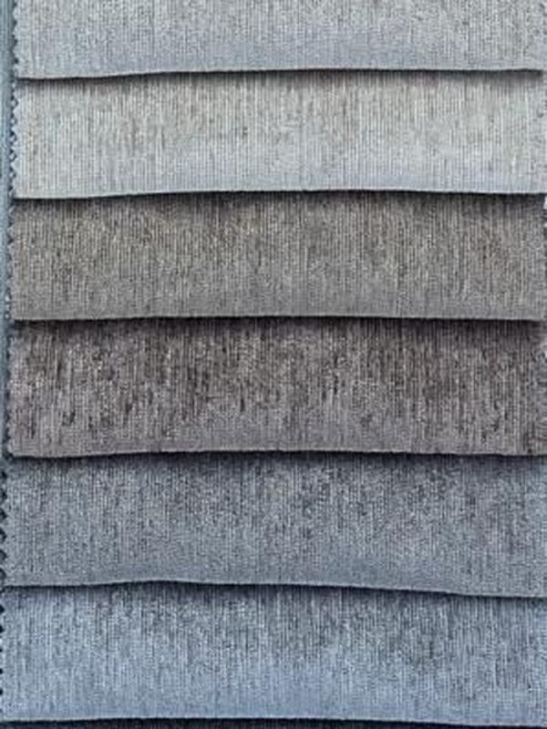
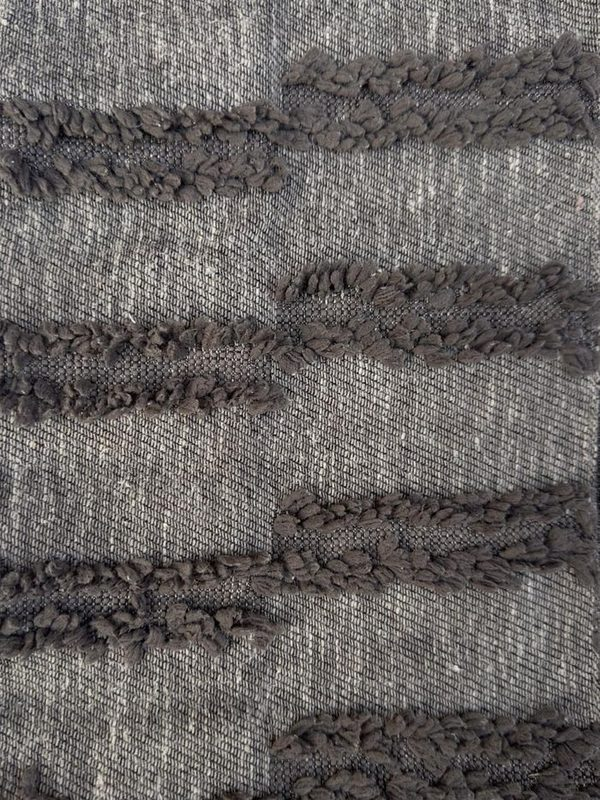
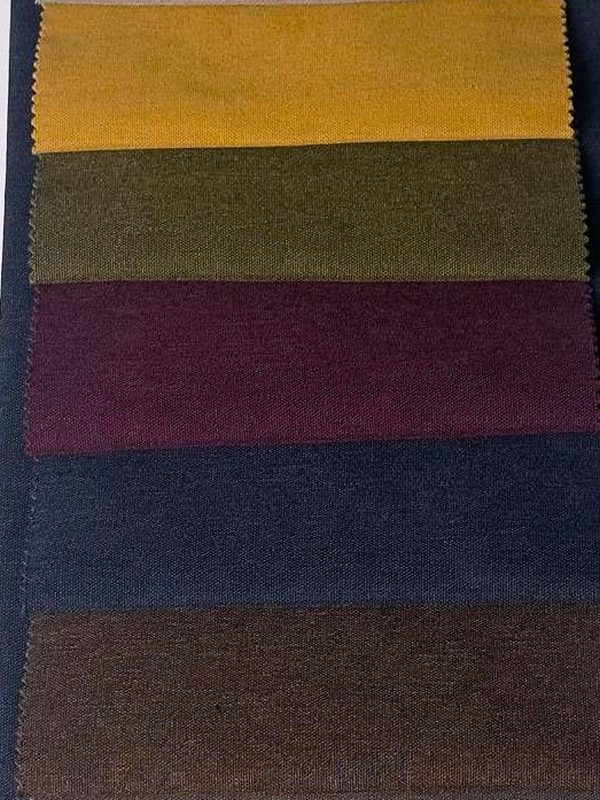
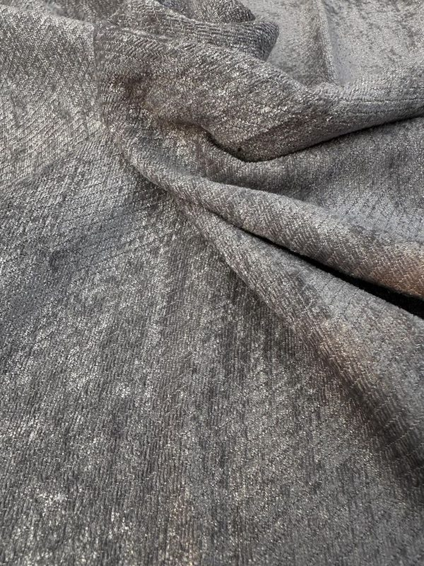
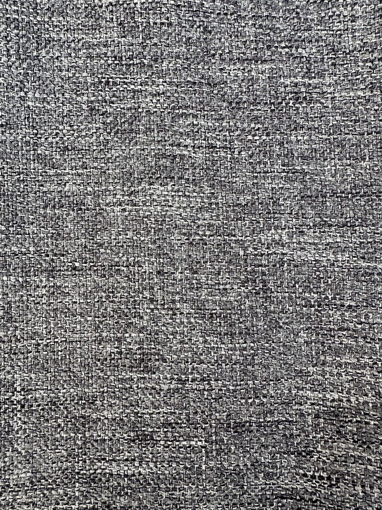

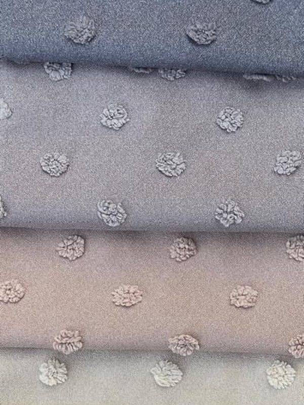
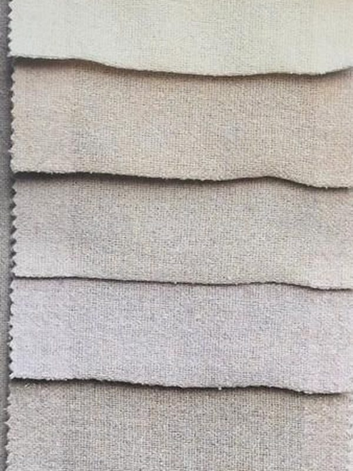
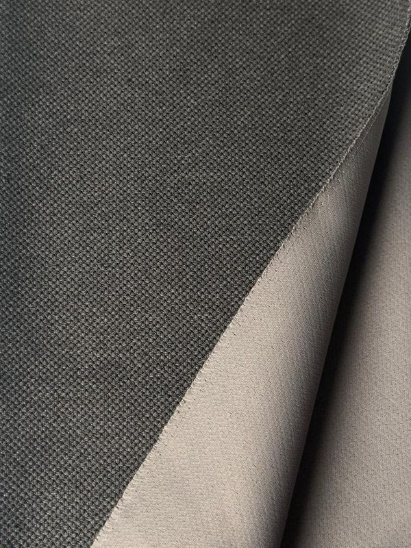
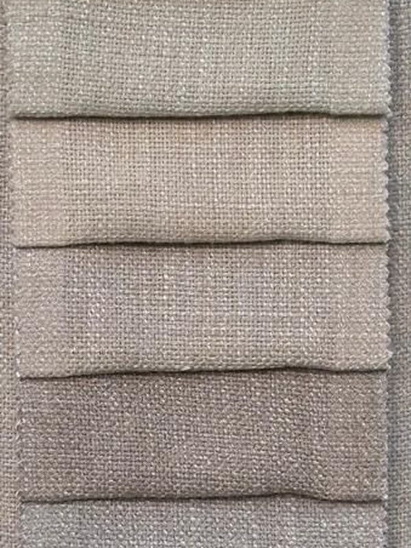
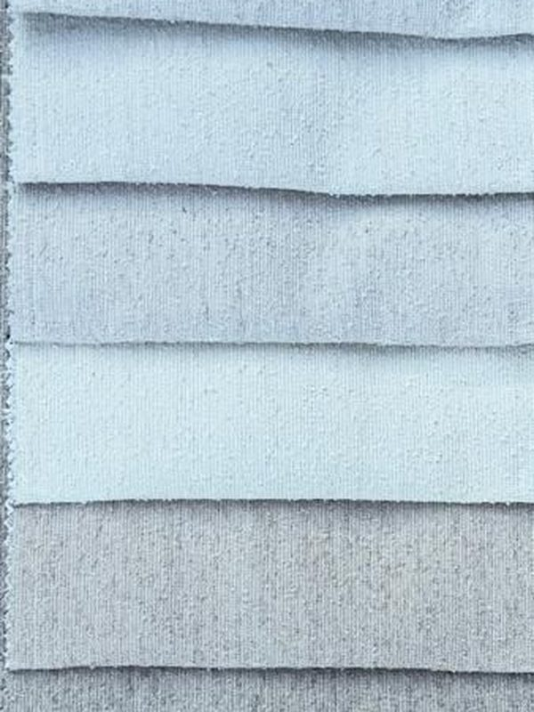
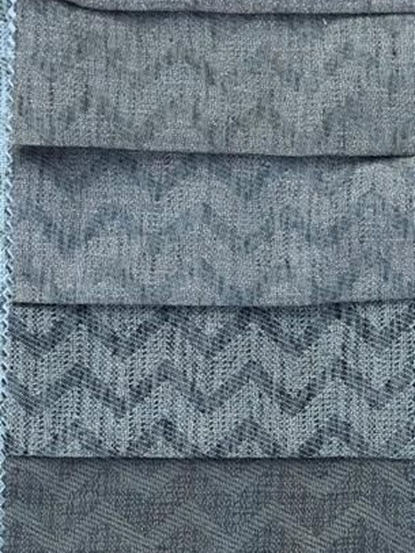
Every drape in the range, with its real figures.
Weights we have not verified say on request rather than a guess. Why the width of the cloth matters.
| Name | Width | Weight | Per metre, USA duty paid |
|---|---|---|---|
| ALABASTER | 310 cm | on request | $102.44 |
| ALDER | 315 cm | 250 g/m² | $75.70 |
| ASH | 315 cm | 350 g/m² | $87.47 |
| ATLAS | 310 cm | on request | $70.03 |
| BEECH | 315 cm | 280 g/m² | $81.66 |
| BELLA | 310 cm | on request | $79.86 |
| BIRCH | 310 cm | 300 g/m² | $83.95 |
| BOHEM | 300 cm | on request | $75.99 |
| CAPRI | 310 cm | on request | $79.18 |
| CAVALLO | 310 cm | on request | $81.19 |
| CEDAR | 320 cm | 330 g/m² | $87.73 |
| CRAFT | 300 cm | 220 g/m² | $64.67 |
| DIAMOND | 300 cm | on request | $58.24 |
| DIMOUT | 300 cm | on request | $58.61 |
| DOLOMITE | 310 cm | on request | $81.86 |
| DOUBLE BLACKOUT | 320 cm | 235 g/m² | $73.31 |
| EBONY | 290 cm | 260 g/m² | $85.89 |
| ELM | 310 cm | 375 g/m² | $96.01 |
| ESEN | 300 cm | on request | $77.20 |
| EVEREST | 300 cm | on request | $66.33 |
| FELINA | 310 cm | 300 g/m² | $103.58 |
| FLINT | 310 cm | on request | $76.96 |
| HARUNA | 300 cm | 320 g/m² | $81.82 |
| HASIR KETEN | 300 cm | on request | $74.79 |
| HAZEL | 290 cm | 200 g/m² | $74.80 |
| IBIZA | 310 cm | on request | $79.18 |
| KEMER | 300 cm | on request | $89.16 |
| LEXUS | 300 cm | on request | $97.12 |
| LIMESTONE | 310 cm | on request | $82.83 |
| LINEN | 300 cm | on request | $62.23 |
| LINVORA | 300 cm | 340 g/m² | $100.65 |
| MAPLE | 290 cm | 280 g/m² | $86.38 |
| MIRAY | 300 cm | on request | $98.45 |
| NOBEL | 300 cm | on request | $89.16 |
| OAK | 310 cm | on request | $76.14 |
| OPAL | 310 cm | on request | $69.72 |
| ORBIT | 305 cm | 230 g/m² | $84.06 |
| PINE | 320 cm | 235 g/m² | $73.33 |
| POLAR | 305 cm | on request | $85.17 |
| PON PON | 300 cm | 220 g/m² | $66.26 |
| POPLAR | 315 cm | 200 g/m² | $74.20 |
| SAGE | 300 cm | 320 g/m² | $81.82 |
| SELENITE | 310 cm | on request | $83.36 |
| ŞIMAL | 310 cm | on request | $79.18 |
| SOSA | 310 cm | on request | $82.51 |
| SPRUCE | 310 cm | 320 g/m² | $87.70 |
| STILL | 300 cm | 220 g/m² | $66.26 |
| TABLO | 300 cm | on request | $94.47 |
| TEAK | 290 cm | 280 g/m² | $86.38 |
| WALE | 310 cm | on request | $81.19 |
| WALNUT | 320 cm | 320 g/m² | $87.17 |
| WILLOW | 290 cm | 275 g/m² | $85.40 |
| ZIG-ZAG | 310 cm | 190 g/m² | $79.90 |
What is the difference between drapes and curtains?
In the US, drapes usually means the heavier, often lined panels that cover a window, and curtains the lighter ones. In the UK both are simply curtains. We make both: these are the heavier cloths; the lighter ones are our sheers.
Which drape weight should I choose?
Around 235 g/m² is the mid-weight most rooms end up in: enough body to hang straight, not so much that the stack gets bulky. Above about 330 g/m² a drape hangs dead straight, deadens a room slightly and wants a strong pole or track.
Can a drape be lined?
Yes. A lining adds weight, improves how the cloth hangs, protects the face fabric from the sun and cuts the light. Almost any drape can be given a blackout lining. Lining and light control.
How much do custom drapes cost?
Drapes run $58.24–$103.58 per metre of cloth used, delivered duty paid to the USA, with the making, the duty and the freight inside the figure. Each cloth page gives two worked examples.
Is there a minimum order?
No. One window is an order, for private and trade customers alike.
Can I get samples first?
Yes. Samples are free, including the postage, anywhere we ship. Write to info@curtainia.com with the cloth names and your address.
Do you ship drapes to the United States and the UK?
Yes. To the USA we ship delivered duty paid, so the import duty is inside the quoted price. We also export to the UK, the EU and worldwide, quoted delivered per country.
Sheer curtains · Drapes · Blackout curtains · Pinch pleat · Ripple fold · Grommet · Rod pocket · Roller blinds · the whole library